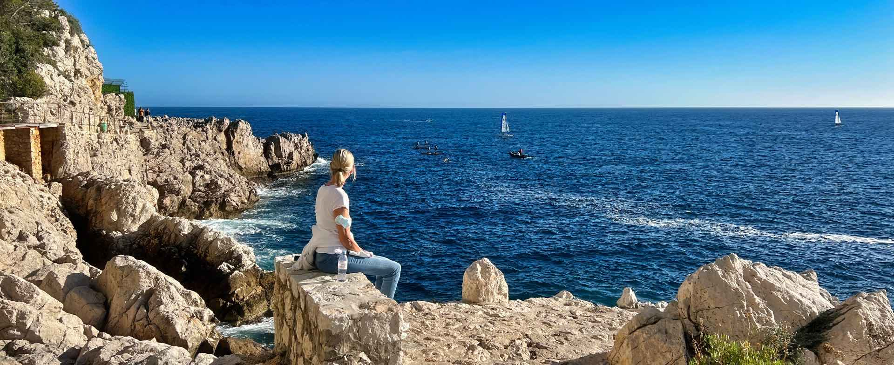

Saint Jean Cap Ferrat

About the trail
The Saint-Jean-Cap-Ferrat hiking trail is a gem nestled on the peninsula of Saint-Jean-Cap-Ferrat in the French Riviera. Renowned for its luxurious villas and pristine natural beauty, this area offers a tranquil escape with its beautiful views of the Mediterranean Sea. Highlights along the trail include passing by the famous Villa Ephrussi de Rothschild. Which is a stunning Belle Époque mansion with gorgeous gardens, and several secluded coves, perfect for a quick dip.
The trail is over 14 kilometers but is accessible for all levels of hikers due to its mostly flat and well-maintained paths.
Recommended Gear
Comfortable walking shoes are recommended. Also, water and sunscreen, especially during the warmer months.